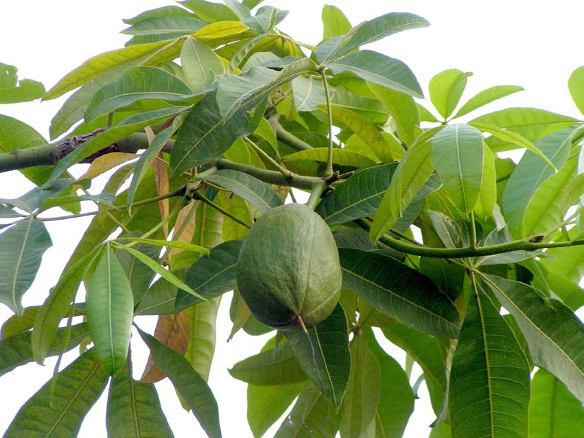
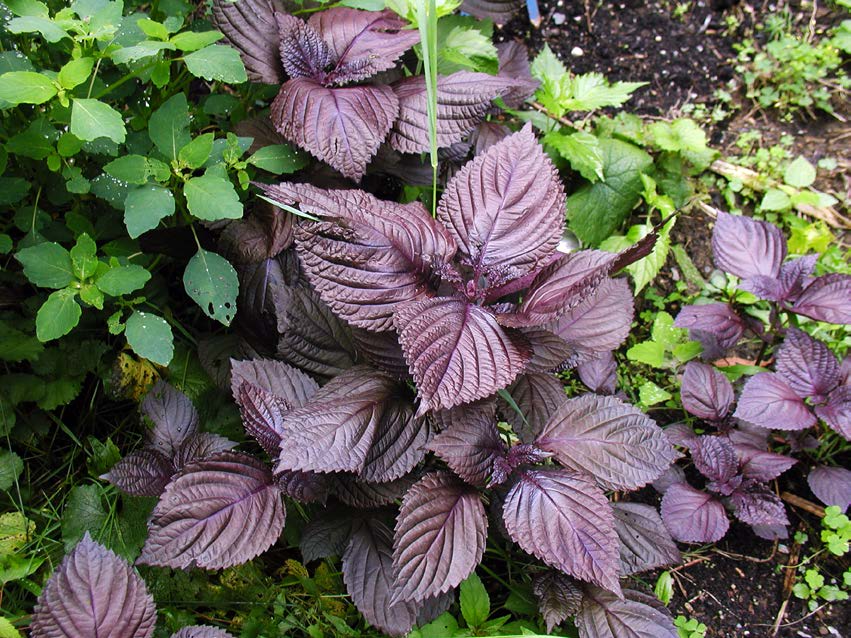
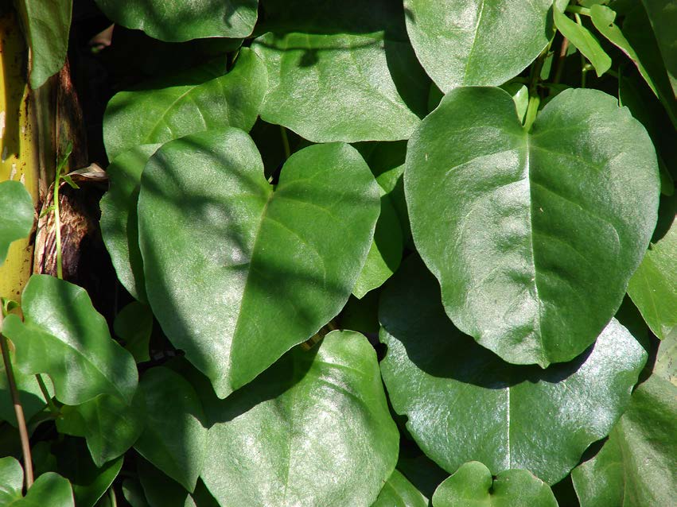
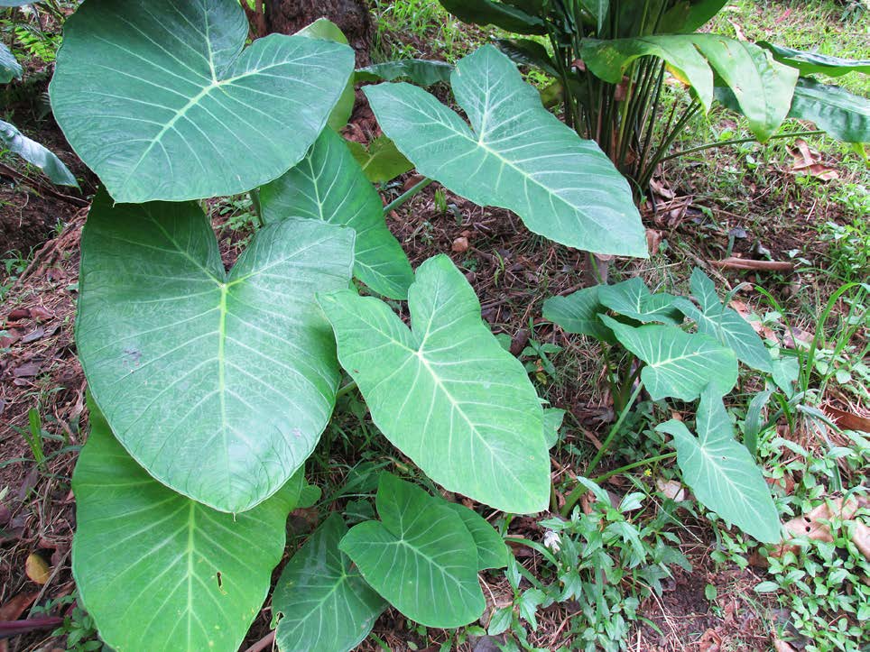
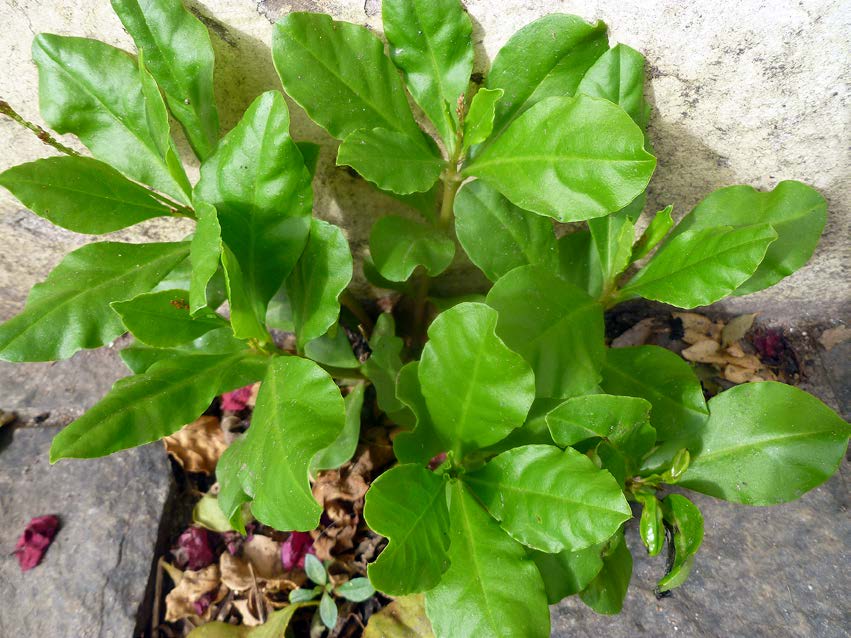
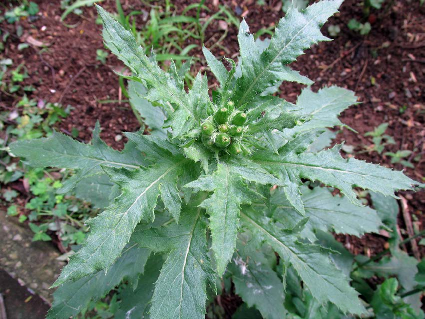
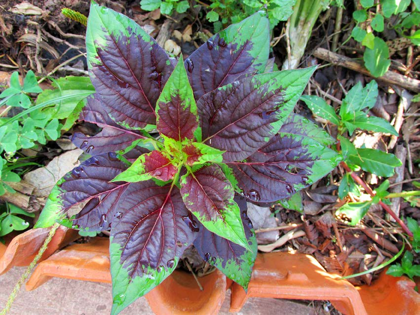

Venha conhecer as PANCs(Plantas Alimentícias Não Convencionais)! Elas trazem mais nutrientes e cores aos pratos do dia-a-dia, vindas das mais diversas fontes e regiões. Além de conhecê-las aqui, você terá a chance de obter mudas para sua horta e colocar seu Jardim na Panela também, com o conhecimento, ingredientes e receitas que irá encontrar aqui!
Mudas mais compradas:

Castanha-do-maranhão

Shisso

Bertalha-coração

Taioba

Caxi

Beldroega

Capicoba

Celósia